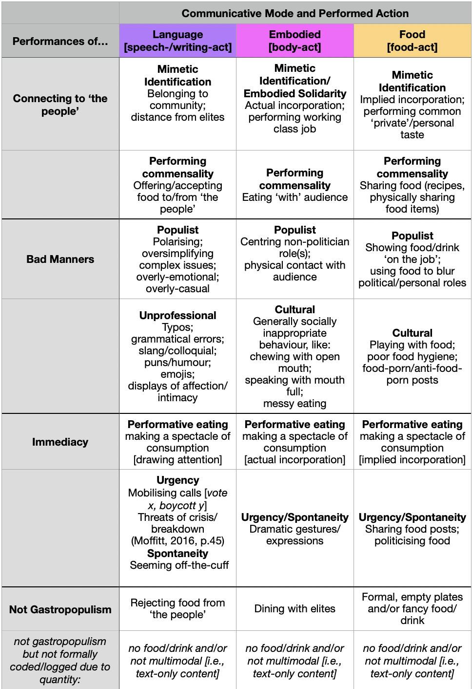

3 Research Approach
3.1 Methodological considerations
Social semiotics are inherently subjective and situated (Kress, 2011, p36), which is congruent with my philosophical approach of constructivist ontology and interpretivist epistemology. Social semiotics approaches are iterative, so ‘description’, ‘analysis’ and ‘interpretation’ are not distinct stages of the research process (Bezemer and Mavers, 2011, p196). The core of the methods used are informed by the works on multimodal communication analysis produced by Norris (2004; 2009), Kress (2011), Bezemer and Mavers (2011), and Cowan (2014). These authors are/were (socio-)linguistic experts in the education field. However, their works are adaptable to the political science context, and proved invaluable for analysing multimodal communication.
My mixed-methods research design is complex and carefully considered. There are four analytical chapters: Chapter Four: Statistical Analysis of key variables to assess the dataset and set up further analysis; Chapter Five: Individual Timeline Trends Analysis pairing interactive quantitative timeline visualisations with inductive qualitative thematic analysis to explore each actor’s use of gastropopulism; Chapter Six: Nationalism and Class uses deductive qualitative thematic analysis to examine how the central themes of extant gastropopulism research manifest in my sample and theory; Chapter Seven: Performative Eating develops an original framework, Multimodal Social Semiotics Timeline Transcription (MMSSTT), to analyse performative eating videos. This dissertation’s structure will produce breadth and depth of analysis of multimodal gastropopulist performances.
3.2 Sample
The population of my study is multimodal content of British and American political actors associated with populist performances using food as a communicative mode. The political actors selected for my sample are: Alexandria Ocasio-Cortez (USA, left-wing); Donald Trump (USA, right-wing); Jeremy Corbyn (UK, left-wing); Nigel Farage (UK, right-wing). Farage and AOC were named in García-Santamaría’s (2020, p146) concluding remarks about other political actors who use food to connect to audiences. The addition of Trump and Corbyn enables analysis of how gastropopulism is performed within and across ideologies and countries. This is an important element to empirically test the impact of conflating of (gastro)populism with ideology and/or region. I next briefly contextualise the selected actors’ celebrity origins.
AOC represents New York’s 14th Congressional District, population ~700,000, yet she has 8.5 million Instagram followers (ocasio-cortez.house.gov, n.d.). Her ‘everyday influencer’ celebrity role attracts a large social media audience through “carefully crafted and stylised” interactive and multimodal politainment centring relatability and ‘ordinariness’ (Starita and Trillò, 2022, p334; Rasulo, 2020, p125). She frequently self-presents idealised gastropopulist performances of her personal role through ‘stories’ and livestreams, which disappear after 24 hours, aligning with Moffitt’s (2016, p85) concern that the celebrity role may enable political actors to avoid scrutiny and accountability. This resonates with ‘disappearing’ gastropopulist performances, as the aura of spontaneity and ‘personal’ content may be used to disguise explicitly political messages.
In 2023, the active and crucial part Trump’s Apprentice role played in his public identity during his 2016 campaign is easily forgotten; he planned to work on season eight until June 2015, when the network publicly cut ties due to Trump’s “derogatory statements” at campaign rallies about Mexican immigrants (St. James, 2015). Though his reality star celebrity origins were filtered through traditional broadcast media, he quickly adapted this to harness the affordances of social media platforms, particularly Twitter (McDonnell and Wheeler, 2019, p430). Furthermore, his adversarial ‘billionaire boss’ reality star role fostered parasocial illusions and inherently blurred the line of perceived (in)authenticity regarding his political role and politics, mutually reinforcing his celebrity and politician roles (Street, 2019, pp7-8).
Farage and Corbyn’s political careers long pre-date social media (and ‘populism’ becoming a buzzword), so their public identities were largely filtered through traditional media. As such, their celebrity politician origins are rooted in their ‘politics’, inclusive of style and substance (Street, 2019, p10; Moffitt, 2016, p85). Moffitt (2016, p84) states that a “key tactic” for populists relying on traditional media is brazen opportunism with media appearances, “particularly those that ostensibly bring them closer to ‘the people’”.
As an MEP for a minor party — both elements of which inspire little media attention — Farage courted press coverage to establish his identity through extensive gastropopulist performances, frequently involved holding a pint of beer (Tindall, 2022, p135). Farage leveraged the traditional media and asserted the political relevance of euroscepticism, and over decades of work, significantly contributed to shifting the UK’s political landscape (Hart and Winter, 2022, p38).
In contrast, the ‘celebrity politician’ role was seemingly given to, rather than sought by Corbyn. Corbyn was a highly rebellious but relatively unknown backbench Labour MP for 32 years before his shock landslide victory in Labour’s 2015 leadership contest (Quinn, 2016, p765). However, his performed (or perhaps more accurately, perceived) authenticity and radical-left policies were extremely popular with young people, dubbed ‘Corbynmania’ (Quinn, 2016, p764). Given his long-established reticence to blend his personal and politician roles (Hattenstone, 2015), the unanticipated addition of a ‘celebrity’ role perhaps posed a challenge for Corbyn’s impression management strategies.
Ultimately, influenced by Street (2019), considering the celebrity origin and affordances of the selected actors’ identities has been highly insightful for my analysis of gastropopulism, particularly when explaining the variations, motivations, and credibility of individuals’ performances. My dissertation is neither a critique nor defence of ‘celebrity’ in politics, but it asserts the explanatory and cultural power of celebrity and popular culture in UK and US contexts.
3.3 Data
The unit of analysis is the post, always constituted of visual and/or audiovisual content, and often containing textual content (e.g., captions). As my approach stresses multimodal communication, purely textual content was excluded. My data collection approach was guided by the existing empirical gastropopulism studies, starting with manual scraping of each actor’s entire official Instagram account [my adjustments italicised] (García-Santamaría, 2020, p130; Starita, 2022, p94; Demuru, 2021, p511). Akin to Demuru, I extended my data collection through Internet searches of “[actor] + [food/eating/cooking]”. My data consists of public communications from political figures collected from verified official sources. Where visible, I censored comments from non-verified users. Accordingly, my dissertation raises no particular ethical concerns. The following tables present descriptive statistics for each actor’s Instagram accounts [Table 3.1] and the makeup of my sample [Table 3.2]. My final sample was n=163 [excluding 15 non-gastropopulist performances, addressed shortly].
Table 3.1: Actors’ Instagram Statistics [03/07/2023]
| Actor | Handle | Follower Count | Post Count | Date Joined |
|---|---|---|---|---|
| AOC | @AOC | 8,500,000 | 577 | 01/2012 |
| Trump | @realdonaltrump | 23,400,000 | 6,126 | 04/2013 |
| Corbyn | @jeremycorbyn | 511,000 | 1,519 | 04/2016 |
| Farage | @nigel_farage | 180,000 | 432 | 03/2017 |
Table 3.2: Sample Descriptive Statistics
| Variable |
AOC N = 26 [+0] |
Corbyn N = 45 [+2] |
Farage N = 65 [+3] |
Trump N = 27 [+10] |
Overall N = 163 [+15] |
|---|---|---|---|---|---|
| Gastropopulism | |||||
| Gastropopulism | 26 (100%) | 45 (96%) | 65 (96%) | 27 (73%) | 163 (92%) |
| Not Gastropopulism | 0 (0%) | 2 (4.3%) | 3 (4.4%) | 10 (27%) | 15 (8.4%) |
| Data Format | |||||
| Audiovisual | 13 (50%) | 11 (24%) | 10 (15%) | 14 (52%) | 48 (29%) |
| Visual | 13 (50%) | 34 (76%) | 55 (85%) | 13 (48%) | 115 (71%) |
| Platform | |||||
| 21 (81%) | 39 (87%) | 54 (83%) | 14 (52%) | 128 (79%) | |
| Other | 0 (0%) | 0 (0%) | 4 (6.2%) | 3 (11%) | 7 (4.3%) |
| 2 (7.7%) | 2 (4.4%) | 0 (0%) | 4 (15%) | 8 (4.9%) | |
| YouTube | 3 (12%) | 4 (8.9%) | 7 (11%) | 6 (22%) | 20 (12%) |
| Distribution | |||||
| Actor’s social media | 24 (92%) | 40 (89%) | 55 (85%) | 9 (33%) | 128 (79%) |
| Mass media organisation | 1 (3.8%) | 2 (4.4%) | 7 (11%) | 10 (37%) | 20 (12%) |
| Other social media | 1 (3.8%) | 3 (6.7%) | 3 (4.6%) | 8 (30%) | 15 (9.2%) |
These descriptive tables establish differences within my sample concerning how each actor uses social media and food in their political communications. Table 3.2 shows that 79% of my sample was collected from Instagram, and (coincidentally) 79% was collected from the actors’ official social media accounts. I next lay out the structure of my methods and analysis, including my gastropopulism codebook.
3.4 Methods and Analysis
The structure of my methods, analysis, and findings is complex but cohesive. I created an extensive coding frame with variables informed by academic literature, and coded my entire gastropopulism sample [n=163]. During the initial data collection, ‘non-gastropopulist’ performances were informally flagged [n=15] and not coded further. My detailed codebook can be found in Appendix A. For conceptual clarity, I now provide an extract of the codebook regarding gastropopulism. Briefly, I used this to individually code the features of gastropopulism as ‘present’ or ‘absent’, and items coded as ‘not gastropopulism’ were excluded from the sample. To properly examine the multimodality of the features of gastropopulism, each mode was coded “in terms specific to its affordances [and shaping], and in terms shared by all modes” (Kress, 2011, p38). Multimodal approaches identify/interpret meanings through “common parlance” or theoretical accounts (Kress, 2011, p39).
Figure 3.1: Codebook extract, Gastropopulism

During the coding process, I generated informal notes of “potential data items of interest, questions, connections between data items, and other preliminary ideas” (Kiger and Varpio, 2020, p850). As a result, themes became clearer and I clarified my codes accordingly, congruent with my iterative social semiotics approach (Bezemer and Mavers, 2011, p196). Each argument is developed through analysis of one or more relevant items, screenshots of which are presented using the knitr (Xie, 2023) and gridextra (Auguie, 2022) R packages. The process of selecting items for deeper analysis was informed by “analytical and rhetorical purposes”, that is, “telling” moments with strong potential for analytical insights (Bezemer and Mavers, 2011, pp194-195). The performative eating chapter analyses only audiovisual data, the other chapters draw from both visual and audiovisual data.
3.5 Statistical Analysis
The statistical analysis chapter assesses how gastropopulist performances are constructed. I adapted Starita’s (2022, p95) approach to generate a summary statistics table of my entire sample using my coding of key variables and the gtsummary R package (Sjoberg, 2021). ‘Key variables’ were informed by the literature, and guide my further analysis. The table quantitatively explores the dataset’s distribution, showing the count and relative frequency of selected categories per actor, ideology, region, and overall. This structure is a considered effort to empirically test performative, ideological, and regional theories regarding gastropopulism.
Key variables: * Incorporation: whether the food was eaten * Cultural association: how the food relates to the actor’s cultural identity * Nourishment: healthy, moderate, unhealthy * Taste: flavour profile * Individual features of gastropopulism * Individual Trends
The statistical analysis chapter establishes how political actors construct their gastropopulist performances. Subsequent chapters continue this work, through examining how political actors use multimodal gastropopulism performances to construct their public identities.
3.6 Mixed-methods Individual Timeline Thematic Analysis
This chapter quantitatively and qualitatively examines each actor’s entire data in the sample, through timeline visualisations paired with inductive qualitative thematic analysis. The vistime (Raabe, 2022), plotly (Sievert, 2020) and emoji (Hvitfeldt, 2022) R packages were used to generate individual interactive quantitative timeline visualisations. This original design aims to visualise potential patterns in each actor’s use of gastropopulism, such as clusters during campaign periods.
The following visualisation of the entire dataset introduces the interactive elements. Hovering on markers displays the date posted and sample ID (Px indicating image, Vx indicating video, and on Trump’s individual timeline, NGx indicating non-gastropopulist content). Datapoints are colour coded to reflect whether the individual theme was present, implied, or absent (N/A [pre-slogan] are coloured grey for Corbyn). On the individual timelines, datapoints used for further analysis are overlaid with symbols, hovering displays the sample ID, date and food. Furthermore, relevant election dates are marked with flag emojis, hovering over which displays the election type and date.
Figure 3.2: Full Dataset Timeline Visualisation
Full timeline legend
When generating the individual visualisations, Trump’s data raised some methodological challenges, due to: his over two year ban from Meta (Instagram and FaceBook) platforms [06/01/2020-07/02/2023] after inciting a deadly insurrection attempt (Meta, 2021); the 10 non-gastropopulist items, eight of ostentatious empty plates at elite political events; and as shown in Table 3.2, the distribution of his gastropopulist content being fairly evenly split between his own social media accounts [n=9], his senior advisor Jason Miller’s official Twitter and Instagram accounts (both @JasonMillerinDC) [n=8], and mass media organisations [n=10].
Accordingly, Trump’s individual timeline marks non-gastropopulist items with grey crosses, and his Meta ban as a grey line. Furthermore, the y axis uses the Distribution variable to delineate between data collected from: his own social media; Miller’s social media; mass media. Trump’s non-gastropopulist items are marked for transparency because they represent a quarter (n=10, 27%) of his initial data collected (n=37), and my argument is based on the purposeful alignment of his gastropopulism with his campaigns. Thus, the timings of his non-gastropopulist performances are relevant, though not further analysed.
Non-gastropopulist items were excluded from other actors’ timelines, as no such items were coded for AOC, only two for Corbyn (4.5%) and three for Farage (4.3%). Additionally, the other actors’ data were primarily collected from their own social media accounts (AOC 92%; Corbyn 89%; Farage 86%), so their y axes do not use the distribution variable. Four items dated between 2011-2014 were excluded from Farage’s timeline as they distorted the visualisation’s scale [P3, 09/09/2011; V13, 03/05/2013; P120, 23/04/2014, used in §6.2 Class; V16, 03/10/2014, used in §7 Performative Eating]. For Corbyn, four items occurred pre-slogan so are colour-coded grey on his timeline [P2; P36; P41; P44]. Documenting these methodological decisions is vital for transparency and replicability (Bezemer and Mavers, 2011, p204).
Each actor’s timeline visualisation is followed by a discussion of their individual trend, generated through inductive qualitative thematic analysis. Inductive thematic analysis is highly suited to my social semiotics approach, as it centres the context and data of each actor to develop themes. This chapter allows us to get a sense of how each actor tailors gastropopulism to their needs.
3.7 Deductive Qualitative Thematic Analysis
My deductive qualitative thematic analysis examines how the central themes (nationalism and class) of extant gastropopulism literature manifest within my sample and under my theory. As the aforementioned studies present gastropopulism as a right-wing discursive ideology used to convey exclusionary nationalism, my nationalism analysis considers four instances of exclusionary and inclusionary nationalism by Farage and Trump. The studies also assert gastropopulism as a right-wing tool to convey class belonging, however, this is common to populists across the ideological spectrum (Tindall, 2022, p139). Thus, instead of centring ideology, my analysis scrutinises how the actors’ performances of class belonging are shaped by their celebrity and professional roles. This extends the discussions of their individual trends by considering how the actors attempt impression management.
This deductive qualitative thematic analysis chapter aims to build upon existing gastropopulism theory to provide a comprehensive account of gastropopulism that is not distorted by ideological assumptions. Instead, this centres the analytical focus on the actor’s integration of communicative modes in their gastropopulist performances, as well as the role of their constructed identity. This chapter offers insights into the performative nature of gastropopulism, and how actors benefit from cohesive gastropopulist performances.
3.9 Methodology Discussion
Though undeniably complex, this research design is formulated to provide a rigorous and comprehensive account of gastropopulism with robust empirical evidence. Each analytical chapter builds from the previous to form an unprecedented breadth and depth of gastropopulism analysis. Ultimately, this will enable a robust answer to my research question, how do political actors use multimodal gastropopulist performances to construct and legitimise their public identities?.